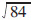
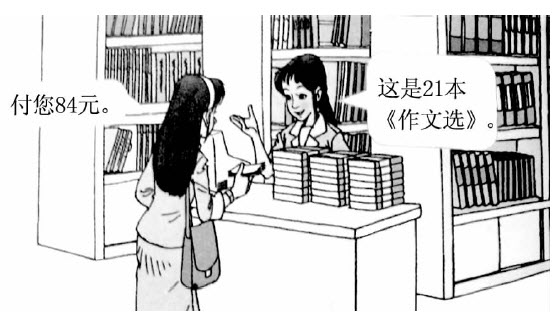
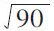
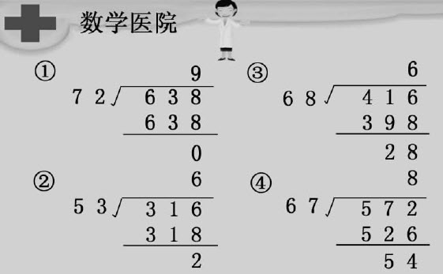
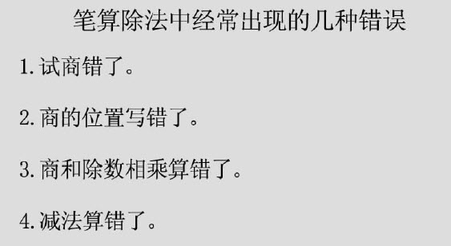
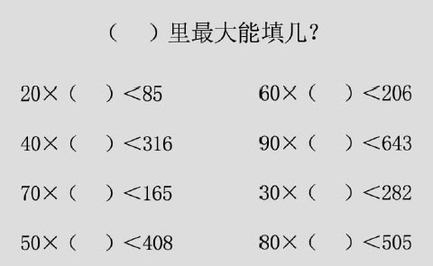
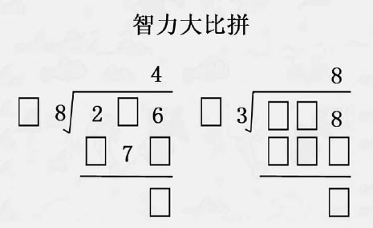

邱学华我从1951年到农村小学当代课教师起，就一直用心实践和研究小学数学教学，屈指算来，到现在已有60多年了。在这半个多世纪里，虽几经波折，道路坎坷，但我始终坚持在小学数学教学园地里耕耘，我和小学数学早已结下了不解之缘，而且它已成为我生命里极其重要的组成部分。2001年新一轮课程改革启动，我兴奋异常，庆幸自己有机会第八次参加课程改革，为此，我尽心竭力地奔波于全国各地，和老师们在一起，共同研究课程改革中的新问题和新经验。最近，我一直在思考这样一个问题：什么样的课才是好课，上好课的基本准则是什么？思来想去，我认为上好课的基本准则有两个：一是真实，二是创新。
真实可以看成是“真”与“实”两个要素的结合，也就是做到“求真务实”。
有不少一线教师听了某些名师的课后，不住地感叹：“名师讲得确实非常精彩，达到了艺术的境界。可是名师们天南海北，上来上去，不就是那几节课吗？”言下之意，名师的课缺少“真”，表演痕迹太深。这些老师的看法不无道理，很值得名师们反思。好课的“真”主要表现在以下几个方面：（1）不弄虚作假，不挑课题，按正常的教学进度教学，真真切切贴近教学的实际情况；（2）不搞形式，不耍花样，老老实实发展学生的数学能力，不让数学活动淹没在非数学的烟雾里；（3）不慕虚名，不以显示自己的高明作为上课的出发点，而是扎扎实实为学生在数学素养上的有效发展做好奠基工作。
真正好的数学课是在特定的数学情境中展开的，是在丰富生动的数学活动中自然催生出来的。另外，我们还应注意的是，“真”意味着数学教学的真正起点是学生原有的认知状况，“真”意味着学生经历了真正有效的数学活动，“真”还意味着学生能从教师组织的教学活动中吸收丰富的数学营养。
“真”是一堂课的主心骨，离开了“真实”还能谈什么呢？一个人要讲真话，一个教师要上真实的课，虚假的东西会害人，这是非常简单的道理。
好课的“实”主要表现在：让学生扎扎实实学好数学知识，打好数学基本功，渗透数学思想，积累数学活动经验。一节课好不好，应当看将“水分”挤干后，究竟还剩下多少“干货”，看看学生到底获得了多少真正的发展。简单来说，我们的数学课就是要回归自然质朴的教学境界，在最益于学生数学素养终身发展的地方下大力气、做真功夫。
在此，我要特别强调数学课堂上的“练”，因为只有练得好，才能夯实学生的数学基础，才能使学生打好可以继续向上生长的数学根基，“练”是达到“实”的必由之路。换句话说，只有通过练习，数学学习才能扎实。
我主张：“学生在练中学，教师在练中讲。”学生只有通过练习，才能激发思维，才能掌握知识、技能和数学思想。学生在练中学，他们的各项数学素养才能激发、生成、跃迁，进而解决新的问题。教师在练中讲，他们才能根据学生练习的情况确切了解学生的所作所为、所思所想，从而找到最适合每个学生的引导方式和学习方法，有效提升数学课堂的教学效率。我明确提出一个观点：一堂没有学生动手练习的课，不算是好课。看看那些成功的教改经验（如洋思中学和杜郎口中学的教学改革经验），我们不难发现：学生不是听会的，而是练会的。这让我想起俞子夷先生说过的一段话：“教学算术中的原理，多说明不如叫学生多做。说明，只能使他们强记。叫他们多做，才可以从实地经验中得到真理，不做，无从想起。”俞子夷先生是我国小学算术教学法的奠基人，他的这段话非常精彩，“不做，无从想起”，言简意赅，一语道破了练习的重要性、练习与发展的关系。当然，练什么、怎么练，还需要教师整体设计和规划，合理安排练习的层次和难度，使学生通过不断练习逐步到达教学目标的理想区域。以前常有人说“不动笔不读书”，在数学课上也应提倡“不动笔不上课”，即学生在数学课上一定要拿起笔来做题才行。
创新可以看成是“创”与“新”两个要素的结合，有“创”才能出“新”。
为了凸显自己的教学个性，某些名师一味在“新奇”二字上下工夫，大讲数学历史、数学文化，结果弄得课堂情境“别有洞天”，可学生的收获却“一盘惨淡”。这样的“创”，其实是剑走偏锋，脱离了教与学的实际，违背了教育的基本规律，一阵“新鲜”之后，并不能给学生留下受益终生的东西。
首先，好课的“创”体现在学生主体精神的涌动上。执教者真正站在学生学的角度来设计教学活动，学生被教师设计的活动吸引，禁不住投入其中，潜能得到充分激发和释放，敢于表现自己的独特想法。
其次，好课的“创”还体现在尝试探究活动的充实上。教师作为组织者，给学生规划目的明确、过程紧凑、开放性强的尝试探究活动，学生则通过独立思考，循着知识的阶梯自主发现新知、新法。因为有了自己的“探”和“悟”，学生的探究活动才真正起到砥砺思维、引发创新的作用。
再次，好课的“创”还体现在教师教学思想的开放和教学行为的灵活上。教学活动复杂多变，学生状况各不相同，所以，单单依靠预设是不可能的。面对出人意料的课堂事件，不加分析地沿用自己的旧套路是不够明智的。唯有随机应变，方能在课堂上创出一方新天地。
教学行为的千篇一律、课堂气氛的死气沉沉，其实是教师思想过于封闭和僵化的一种外在显现，暴露出教师教学观念上的因循守旧及其自我更新能力的欠缺。
怎样让学生“创”？办法很多，最主要的是给学生机会，给学生练的机会、说的机会、提问的机会、上台当小先生的机会……教师应当记住：你给学生一个机会，学生就会给你一个惊喜。
好课的“新”主要表现在渗透新思想、生成新方法、创造新形式上。有的教师上课，只能使学生“依葫芦画瓢”，把知识原原本本地记住；有的教师做得好一些，他们努力使学生在知识之外习得一些方法，知道知识是怎么被“制造”出来的；更高明的做法是，学生参与“创造”知识的过程，知识成了学生之间、师生之间心智碰撞的结晶，由此，知识从“结论”被改造成为“过程”，学生不仅收获了知识和技能，而且发展了思维，学会了学习，掌握了数学思想方法，其思维的触角得以向更大的范围伸展、更深的层次开掘。让学生获得对数学思想的崭新领悟，这样的“新”所发挥的影响是极其深远的。
教学有法，教无定法，边教边思，常有新法。有些名师的课让人屡听不厌，就是因为他们的教学方法不是一成不变的。时间不同，地域不同，学生不同，方法也随之发生变化。教师要能够根据学生去调整自己用熟了的方法，虽然调整会带来风险，甚至有失败的时候，但这样的“新”方法，一定会引发出更成熟、更富有智慧的好方法。
正确处理创新与继承的关系。在强调创新的时候，不能把其与继承中国数学教育的优良传统对立起来。中国数学教育的优良传统是立足的根本，是发展的源头。不能为了创新把中国数学教育的优良传统丢掉。例如，“加强双基”是中国数学教育的优良传统，这个根本不能丢掉，但对双基的内容及实施数学双基的形式和方法可以不断创新。
大家应该注意，形式并不是可有可无的东西，它与内容是无法完全割裂开来的。有时候，形式上的革新也会引发内容上的突破，从而极大地推动教学活动质量的提高。所以，形式创新也是教学内容有“新”的重要体现。
这里必须明确一个观点，形式是为内容服务的，形式的“新”是为了使学生更好地理解知识、形成技能、掌握思想方法以及积累数学活动经验。如果离开教学效果，一味追求形式上的新颖，是没有意义的，反而会陷入形式主义的泥潭。新形式的好与坏，判断的标准主要是看教学效果。正所谓“方法好坏看效果”。
真实与创新是互相联系的，真实是为了更好地创新，真实是创新的基础，创新是真实要达到的目标。为了纠正当前课堂教学中形式主义和非数学化的倾向，有教师曾提出上“家常课”、“平常课”、“原生态课”等，意思就是上贴近实际的真实课，不过，这些提法容易引起误解。只提真实不行，要体现课程改革方向，还必须创新。有了创新，才能改革旧的课堂模式和教学方法；有了创新，才能创造出符合时代特征的新模式和新方法；有了创新，才能提高学生的数学素养；有了创新，才能提升中国的数学教育。因此，提“上真实创新的课”，比较全面，要求明白，通俗易懂。
新课程改革经过近几年的反思和调整，一定会有新的发展，我们大家都应该上“真实创新”的课，为新课程改革的健康发展添砖加瓦。特别是名师要能够带头上“真实创新”的课，因为名师的课影响较大，能起到导向作用。另外，各种优质课比赛评课标准中也要鼓励参赛教师上“真实创新”的课。最好采用当场抽签选择课题、当场备课的办法，这样才能真正考查参赛教师的真实水平，对课堂回归朴实自然，拒绝急功近利、弄虚作假、形式主义，将会产生积极的作用。
2008年11月底，“全国小学数学名师教学风采展示会”在山东济南举行。我受《山东教育》编辑部秦荃田主任的邀请参会，他们要求我除做讲座外，一定要上一堂课。我欣然同意。按照四年级的教学进度，我上了“除数是两位数的笔算除法”这堂课。在设计上，我强调“学生在练中学”，通过不同层次的几十道练习题，让学生自己理解和掌握除数是两位数的笔算除法，最后连口算卡片都用上了。我大胆让学生当小先生，先让学生在课前预习，上课时由他们上台讲解。这种方法对于学生来说是第一次，会有不尽如人意的地方。这样上课到底好不好，欢迎大家来评说。
课堂智慧
“除数是两位数的笔算除法”教学实录
【教学背景】
2008年11月底，在山东省济南市召开的“全国小学数学名师教学风采展示会”上，邱学华先生应邀做讲座，还亲自上了示范课。邱学华先生是大家熟知的著名小学数学教育家、“尝试教学”理论的创立者，以74岁高龄，能够亲自上台给小学生上课，令人肃然起敬，他的课既真实又富于创新气息，在与会教师代表中引起了热烈的反响。邱先生按照实际教学进度上了一节计算课，一般名师上公开课大都不愿意选择这类课题，因为很难发挥出彩。邱先生大胆地让学生预习，由小学生自己上台讲课，把这堂课上得自然朴实且有声有色。他这种大胆尝试、敢于实践的精神，得到了大家由衷的敬佩和爱戴。
【教学实录】
师：预习了吗？
生：（齐）预习了！
师：今天我们要学什么？
生：（齐）除数是两位数的笔算除法。
师：我们前面学习的除法和今天要学的有什么不同？
（课件依次出示：①20

②21 ）生：以前学的是除数是整十数的口算除法，今天要学的除法算式中除数不是整十数了。
师：像这样的题目，口算比较难，得学习笔算才能顺利解决。
师：（出示课本第84页的主题图）图上说了什么事情？生：买21本《作文选》，付给售货员84元钱。

师：这样说题目，能算完整吗？
生：不完整。
师：条件该怎么说？看书上第（2）题，买《作文选》的老师姓什么？谁能补充完整？
生：王老师买了21本《作文选》，付给售货员84元钱。
师：问题怎么提？谁能把题目完完整整地说出来？
生：王老师买21本《作文选》，付了84元钱。一本《作文选》多少元？
（课件出示题目，学生齐读后，教师强调：这样的题目才算是完整的应用题。之后，学生在练习本上尝试计算，教师巡回指导。）
师：好了吗？请第一组的同学来当老师，给我们讲讲这道题是怎样做的。
［第一小组派出三名代表，一名负责贴白板纸（学生把解法用黑彩笔写在了上面），一名负责给大家讲解，还有一名负责检查。］
生：先用84除以21，把21看成20，想80除以20得4，商那里写4。21乘4等于84，84减84等于0。
师：对不对呀？讲得怎么样？（学生鼓掌表示认同）
（学生观看，教师用课件演示完整的计算过程）
［教师出示第（2）题：王老师还有196元，要买39元一本的词典，可以买多少本？还剩多少元？］
（学生读题后，开始动笔解题。在巡视中，教师要求各小组长在自己完成后去检查组内其他成员的做题情况，如果有同学不会做，小组长要帮助他学会解答。）
（全班解题完毕后，第三组派三名代表到黑板前汇报讲解的做法。）
（教师特意追问了第三小组的试商方法，并在与课本上的试商方法进行比较后，高兴地对同学们说：“书上先用4试商，太小，又换5，这是比较笨的方法。我们班有些同学运用口算，就能一眼看出商就是5，很不简单！”同学们听了之后，脸上露出了开心的表情）
师：课本第84页下面的“做一做”总共有6道题。这6道题，看谁做得又好又快！
（学生独立完成课本第84页下面的“做一做”）
师：做完的同学自己先检查一下。没问题了，再帮其他同学检查，看看别人做得怎么样。同学之间也可以互相检查。
（等学生都完成后，教师利用课件直接出示各题的答案，由学生自己核对）
师：6道题都做对的同学请站起来！（学生鼓掌祝贺）
师：有错的同学请站起来。（有七八个同学不好意思地站了起来）有错不要紧，弄清楚错在哪儿、为什么错就行了。谁能和大家说说自己刚才做题时哪里错了？
生：29

，我试商时把29看成30，在商与除数相乘时也算成了乘以30。师：对啊，试商的时候用的是近似数，乘的时候还是应当用原来的数去算。这是很重要的学习经验！
生：我把87当成78，写反了。我抄题时太不认真了。
……
师：马上改正！改过来也算你做对了。（做错的学生改正，已经做对的同学帮助检查把关）
（教师用课件出示“病号”）
师：下面我们来当当数学小医生，看大家能不能诊断出下面这几个“病号”的病因。（学生逐一作出“诊断”，教师每次都注意追问“病因”）

师：你们都说说，做除数是两位数的笔算除法，哪个地方最容易出错啊？
（学生踊跃发言）
（在学生各抒己见的基础上，教师用课件出示）

师：今后计算一定要注意这四个方面。为了使计算又快又准，我们需要练练基本功。那么，具体需要练哪些基本功呢？
（学生认为应该练习一下退位减法、一位数乘两位数的口算、试商的方法等基本功。）
师：最重要的是一位数乘两位数的口算，我发现有些同学做得还不够熟练。
［教师以卡片的形式出示10道口算乘法题目（卡片是以除法竖式的方式呈现的，竖式中只出现了除数和商），要求学生抢答出积，然后教师反馈正确答案］
（随后，教师组织学生进行了试商训练，题目由教师用课件出示）

师：做了那么多道题，老师要奖励一下大家。奖励什么呢？（学生立刻瞪大了眼睛，紧盯着教师）奖励两道难题！（课件出示“智力大比拼”题目）
（闻听此言，同学们都会心地笑了）

师：这两道题比较难，除法算式中有空格，需要根据除数、商、被除数之间的关系推算出来，留给你们课后去思考，比一比，看谁能做出来。特别是第二道题，就是老师们做，也得好好动一番脑筋呢！
【总评】
邱老师选择这个课题来上课，仅仅是因为学生正常的学习进度刚好到这里。在教学过程中，邱老师没有加入令人耳目一新的各类拓展资料，也没有刻意打磨能凸显教师“匠心”的非常之举，有的只是“家常货”，用的都是“家常法”，说的都是“家常话”，充盈于课堂之上的是一种质朴自然的家常气息。这样的课堂教学，真正还原了数学课堂的本真面貌，是真正为了学生发展的数学课堂生活，学生真正成为课堂学习的主人翁。这样自然实在的课堂教学，放在时下诸多公开课中，确实显得有点另类，因为教师舍弃了原本属于自己的那份光彩夺目，心甘情愿地做起了幕后辅助工作，这样的退隐很容易被听课者误解为执教者不合时宜。我想，德高望重的邱学华老师敢于这样做，正是要提醒我们每一位数学教师：学生的有效发展才是课堂教学活动永恒的主题，“教”得精彩最重要的标识就是“学”得精彩！
（本课整理者、总评者：张良朋）